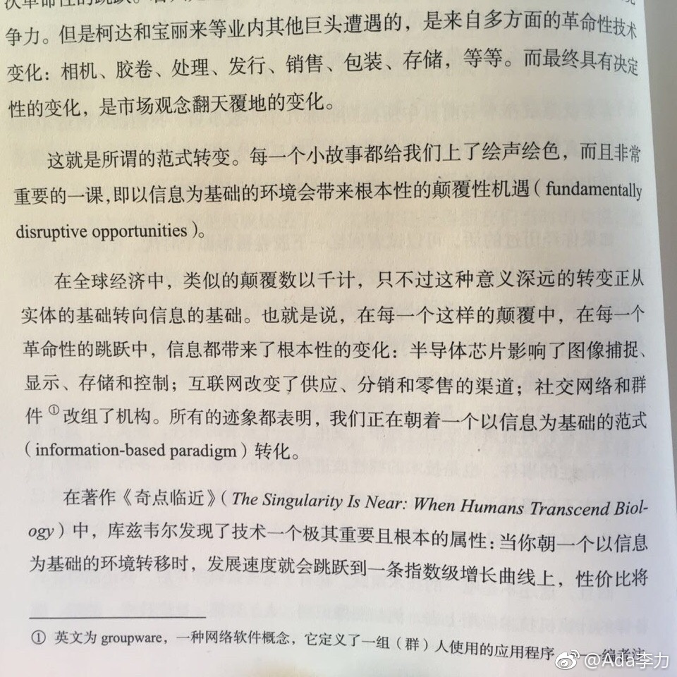

#读书# 摩尔定律是半导体行业提出的，这个定律后来可以用来说明互联网的发展，现在可以说明通过社交网络建立起来的组织。
互联网的摩尔定律在供应，分销和零售渠道的改变和影响还在进行中，在中国看看各种新零售的尝试就知道了。
而社交网络为基础的组织机构，倒还显得像个新课题。我对这一点更有兴趣，因为之前搞过开源，搞过社群运营，了解这其中蕴含的力量。
作者认为中国在打造《指数型组织》更有优势，传统文化中的社交是一个因素，另外组织理念基础差，倒容易实现弯道超车。弯道超车已经有证明，比如手机，比如移动支付。
互联网的摩尔定律在供应，分销和零售渠道的改变和影响还在进行中，在中国看看各种新零售的尝试就知道了。
而社交网络为基础的组织机构，倒还显得像个新课题。我对这一点更有兴趣，因为之前搞过开源，搞过社群运营，了解这其中蕴含的力量。
作者认为中国在打造《指数型组织》更有优势，传统文化中的社交是一个因素，另外组织理念基础差，倒容易实现弯道超车。弯道超车已经有证明，比如手机，比如移动支付。
- 